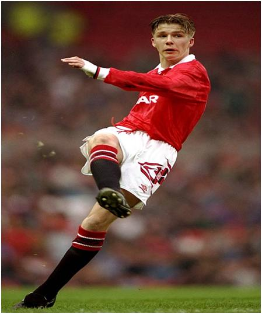
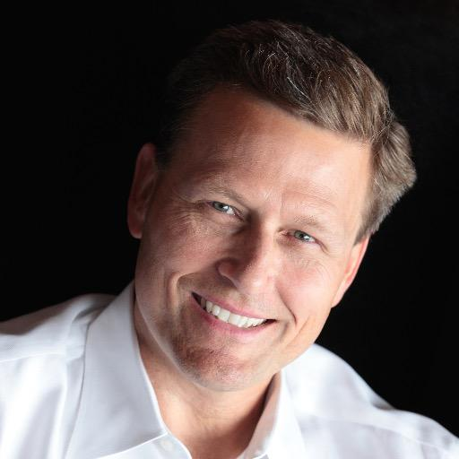

Chương Bốn

háng chín, 1992, David Beckham đột nhiên được gọi lên tập với đội một. Vài ngày kế, Sir Alex Ferguson cho David biết anh sẽ bay cùng đội tới Brighton, chuẩn bị cho trận đấu sắp tới trong khuôn khổ Cúp Liên Đoàn Anh (LĐ) gặp Brighton & Hove Albion. Bay chung chuyến đó còn có vài cầu thủ tập sự khác như Gary Neville, Chris Casper, và Ben Thornley. Manchester United thời ấy còn “hàn vi”, tiêu xài hãy còn tiết kiệm: Các cầu thủ phải ngồi chen chúc nhau, chật như cá hộp, trong chiếc máy bay cánh quạt nhỏ xíu 17 chỗ ngồi. David trong bụng đang hồi hộp, máy bay lại trồi lên thụt xuống, lắc lư lắc lư, khiến anh càng nôn nao, khó chịu khôn xiết. Đến khách sạn, anh lăn ra ngủ như chết.

David Beckham năm 1992 (Ảnh: Sportsillustrated)
Ngày diễn ra trận đấu, David chỉ được ngồi ghế dự bị. Mãi đến phút thứ 73, HLV mới ra hiệu cho anh vào thay Andrei Kanchelskis. David nhảy cẫng lên trong cơn hứng khởi, cụng đầu đến cốp vào mái che, đau điếng! Sự nghiệp của một huyền thoại United đã khởi đầu như thế đấy.
Thời gian có mặt trên sân quá ít, David không tạo nên dấu ấn gì, chỉ chuyền được vài đường, chưa kịp sút cú nào, Quỷ Đỏ bị cầm chân với tỷ số đáng thất vọng 1 – 1. Sau trận đấu, Sir Alex Ferguson còn mắng anh một trận. Dẫu bị mắng, David không kìm nén được niềm vui tuôn trào: Chỉ 17 phút thôi, nhưng đã đủ biến ước mơ thời thơ ấu thành hiện thực. Anh vội vàng thay quần áo, rồi chạy ra ôm choàng lấy cha mẹ:
-Ôi bố ơi! Con bị khớp, chân cẳng cứng đờ, bụng quặn thắt cả lại, sợ không đá nổi luôn. Nhưng mà tuyệt vời quá, thật không thể tin được!
Tối đó, hai cha con không ai chợp mắt.
Cùng năm 1992, David chính thức ký hợp đồng chuyên nghiệp với Manchester United, nhận lương 200 bảng một tuần, một trời một vực so với mức lương 29.5 bảng giành cho cầu thủ tập sự. Anh giúp United giành ngôi á quân Cúp FA trẻ (thua Leeds United) năm 1993, và vô địch giải đấu giành cho đội dự bị (reserve) năm 1994.
Tuy vậy, trên cấp độ đỉnh cao, mọi chuyện không mấy tiến triển. Sau trận hòa Brighton & Hove Albion, David phải đợi hơn hai năm trời mới có dịp chơi cho đội một lần thứ hai. Tháng 12, năm 1994, khi Manchester United không còn hy vọng vượt qua vòng đấu bảng Cúp C1, Sir Alex Ferguson quyết định cho các cầu thủ trẻ thử sức trong trận đấu thủ tục gặp Galatasaray. David Beckham, Nicky Butt, và Gary Neville đều được ra quân trong đội hình xuất phát, bên cạnh các đàn anh Gary Pallister, Steve Bruce, Eric Cantona…David mang áo số 10, số áo thường ngày của Mark Hughes, và cũng là của các huyền thoại một thời như Dennis Viollet và Denis Law[1].
Tinh thần thoải mái, chẳng có gì để mất, Quỷ Đỏ chơi một trận đầy hưng phấn. Sau bàn mở tỷ số của Simon Davies, phút thứ 37, hậu vệ Galatasaray phá bóng bật ra đến chân David, ở vị trí chếch về phía phải, sát vòng cấm địa, anh tung ngay cú sút chìm, ghi bàn thắng đầu tiên cho CLB thân thương. Được Cantona đến chúc mừng, David ôm cứng lấy Eric mãi không thả, khiến ngôi sao người Pháp cuối cùng phải đẩy anh ra. David ngỡ mình đang chìm đắm trong một giấc mơ: Ghi bàn cho Manchester United, rồi ăn mừng cùng Cantona! Đời còn gì đẹp hơn? Nhưng vẫn chưa hết, đến phút 48, lại là David đón đường chuyền từ Cantona, đánh đầu kiến tạo cho Roy Keane phá lưới đối phương. Galatasaray tan tác, tự đá vào lưới nhà thêm trái nữa, để cúi đầu ra về với tỷ số thua 0 – 4.
Trong số những đàn anh, Eric Cantona là người có sức ảnh hưởng mạnh đến David Beckham. Không phải vì Eric và David thân nhau đâu, bởi Cantona mang lối sống của một triết nhân trầm mặc, hầu như không thân với ai. Đá xong, tập xong, Cantona lẳng lặng lái xe ra về, chẳng bao giờ ở lại tụ tập, tán gẫu với đồng đội. Tuy nhiên, ở Cantona như tỏa ra một ánh hào quang đặc biệt, phong thái đường bệ của Cantona khiến không chỉ David mà bất cứ cầu thủ United nào khác cũng phải kính nể. Trong phòng thay đồ ở Old Trafford, mỗi lần Cantona bước vào, mọi người ai nấy đều im phăng phắc, đang làm gì đều dừng ngay lại. Đến như Sir Alex Ferguson cũng phải nhường Cantona vài phần. Tuy ai cũng thấy Sir Alex biệt đãi, ưu ái Cantona, không ai cảm thấy bất bình. Họ cho đó là lẽ đương nhiên: Thiên tài cần được đối xử cách khác biệt.
Trầm lặng, ít lời, song hành động của Cantona đủ nói lên tất cả, đủ làm tấm gương cho đàn em noi theo. Mỗi ngày, sau buổi tập, một mình Cantona ở lại tập thêm. Tập đủ bài, từ sút phạt đến lừa bóng, nhưng ông giành nhiều thời gian nhất để luyện những động tác cơ bản: Sút vào tường, rồi đá bóng bổng thật cao, sau đó tìm cách khống chế gọn ghẽ nhất khi bóng rơi xuống. Nhìn Cantona luyện tập, David lĩnh hội được bài học sâu sắc: Giỏi động tác cơ bản thì sẽ giỏi tất cả, dù lên cao đến đâu, không bao giờ được phép quên cơ bản. Ngôi sao quốc tế như Cantona còn phải bỏ hàng giờ luyện cơ bản, thì một cầu thủ trẻ mới ra ràng không bao giờ được phép tự mãn.
Dù không mang băng thủ quân[2], Cantona đích thực giữ vai trò thủ lĩnh. Sau này, khi được chỉ định làm đội trưởng tuyển Anh, David cố gắng học theo phong cách Cantona. Tính tình cả thẹn, ít nói, David không thể hò hét, động viên đồng đội suốt trận như các đội trưởng khác, anh chỉ có cách dẫn dắt bằng hành động, hết mình nỗ lực để chúng bạn trông vào.
Bên cạnh Cantona, David còn chịu nhiều ảnh hưởng từ người khổng lồ Đan Mạch Peter Schmeichel. Không khó gần như ông hoàng người Pháp, Schmeichel luôn xởi lởi với đàn em, ai tìm đến ông cũng được, muốn nói chuyện gì ông cũng hầu: Chuyện bóng đá, bồ bịch, trên trời dưới biển, con cà con kê. Trên sân tập, Schmeichel luôn đòi hỏi đồng đội phải nỗ lực đến tận giọt mồ hôi cuối cùng, ai chuyền hỏng, sút hỏng, ông cất giọng chuông rền mắng cho như tát nước. Thắng được Schmeichel trên sân tập, sẽ có đủ sự tự tin hạ gục bất kỳ thủ thành nào…
Được ra sân trong trận gặp Galatasaray, sát cánh bên Cantona và Schmeichel, David Beckham sung sướng tưởng như lên tới thiên đàng. Không may, niềm vui ngắn chẳng tày gang, năm mới 1995 vừa đến, Sir Alex Ferguson đã gọi David, thông báo quyết định đem anh cho Preston North End mượn trong một tháng.
Preston North End? David choáng váng? Tại sao lại là Preston North End? Preston chỉ là một đội bóng hạng ba nhỏ bé, từ Manchester United xuống Preston là một bước lùi ghê gớm. Bọn Scholes, Butt, Neville đều ấm chỗ cả, tại sao mình lại phải đi? Phải chăng mình đã không còn trong kế hoạch của thầy? Phải chăng đây là bước đầu tiên trong việc mình bị đá bay khỏi Old Trafford?
Hoang mang cực độ, David hỏi ý cha và thầy Eric Harrison, rồi quyết định gặp thẳng, phàn nàn với Sir Alex. “Đừng nghĩ lung tung”, Sir trấn an, “Chỉ là cơ hội cho con được đá chính, học hỏi thêm thôi.”
Nghe trấn an, David tạm yên lòng ra đi. Sir Alex cho anh hai lựa chọn, hoặc ở lại Manchester tập luyện, chỉ đến Preston những hôm có trận đấu, hoặc tập trung hẳn ở Preston. David chọn phương thức thứ hai: Đã đá cho người ta thì phải ở hẳn đấy, chứ lại đến ngày thi đấu mới khệnh khạng sang, người ta còn coi mình ra cái gì?
Đến Preston, David như đặt chân sang “thế giới thứ ba”. Ngôi sao duy nhất của Preston không phải cầu thủ nào, mà là…ông chủ tịch: Sir Tom Finney, người từng hai lần được tôn vinh là Cầu Thủ Xuất Sắc Nhất Nước Anh vào các năm 1954 và 1957. Cơ sở vật chất tại CLB chỉ đạt mức tối thiểu. Kết thúc buổi tập đầu tiên, David vừa cởi áo quẳng ra, chuẩn bị đi tắm, thì nghe tiếng nhắc nhở:
-Này này, sao lại quăng áo thế kia? Cầm lên đem về giặt, mai còn mặc chứ!
Thì ra ở Preston không có nhân viên chuyên giặt ủi, mà cầu thủ cũng chẳng có nhiều đồng phục để nay áo này mai áo khác. David cũng không lấy thế làm phiền, nhập gia phải tùy tục, chẳng qua vì mới đến nên hơi bỡ ngỡ thôi. Nhận thấy David lúng túng, chưa quen người, quen việc, thủ quân Preston, trung vệ David Moyes (đương kim HLV trưởng Manchester United), luôn để ý, giúp đỡ anh khi cần. David hòa nhập nhanh với môi trường Preston, một phần không nhỏ nhờ công Moyes.
Chuyên gia đá phạt của Preston là Paul Raynor, song David vừa tới, HLV Gary Peters liền bắt Raynor nhường nhiệm vụ đá phạt. Raynor tất nhiên không hài lòng, khiến Peters phải giải thích rõ rằng ngay tại Manchester United, David cũng được ưu tiên đá phạt trước các ngôi sao đã thành danh như Ryan Giggs và Denis Irwin. Nghe xong, Raynor nhất quyết không tin, cho là sếp lừa mình. Cái thằng nhãi này mà đá phạt hay hơn Denis Irwin á?
Nghi vấn trong lòng Raynor nhanh chóng tan biến. Ngay lần đầu khoác áo Preston, David đã sút tung lưới Doncaster từ…chấm phạt góc, giúp đội nhà kiếm được trận hòa 2 – 2. Đến trận thứ hai, thắng Fulham 3 – 2, anh tiếp tục lập công với pha sút phạt trực tiếp. Đây là bàn “nhớ đời” của David, vì khi anh đang chạy ăn mừng, một đồng đội rượt theo, chia vui bằng cách…nắm tóc anh giật ngược trở lại, gần lột cả da đầu!
Thời gian còn lại với Preston, David thi đấu thêm 3 trận, thể hiện phong độ rất tốt, dù không ghi thêm bàn nào. Lúc mới đến, anh buồn rũ rượi trước viễn cảnh bị Manchester United thải loại, nay lại vui như Tết. Được đá chính liên tiếp là thích rồi, bất kể ở ngoại hạng hay hạng ba, giờ có bị United bán đứt cho Preston cũng không vấn đề gì. Trở lại Old Trafford, việc đầu tiên David làm là xin Sir Alex Ferguson cho được ở lại Preston thêm một tháng!
“Ở ở cái gì?”, Sir Alex đập bàn, “Ở lại đây đây này, không có đi đâu sất!”
Sir Alex có lý do của riêng mình: 5 trận vừa qua là đủ để David xây dựng niềm tin vào bản thân, đã đến lúc tung chàng trẻ này vào sân chơi lớn hơn. Mắng David xong, Sir cho biết anh sẽ ra quân trong trận kế tiếp gặp Leeds United tại giải ngoại hạng.
David Beckham ra mắt giải ngoại hạng trong một trận “hồng hoa đại chiến”, thật không còn gì phù hợp hơn[3].

David Beckham trong màu áo Preston North End (Ảnh: Dailymail)
Chú thích:
[1] Trận ra mắt năm 1992, David mặc áo số 14.
[2] Thời điểm đó, Steve Bruce vẫn còn là đội trưởng.
[3] Leeds United là đại kình địch của Manchester United. Mỗi trận hai đội gặp nhau là một “derby hoa hồng”.